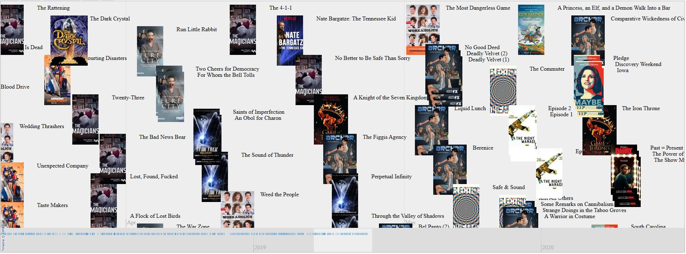

What is this site?
Stephen's Profile
Browser Extension
Stephen Klancher
Recent
Overall
Year Overview
Series
Lists
Screenshot example of what used to be a dynamic timeline
Depending on the page linking to it, it could show everything a user watched, or just movies/episodes, or a specific list, or specific series.
